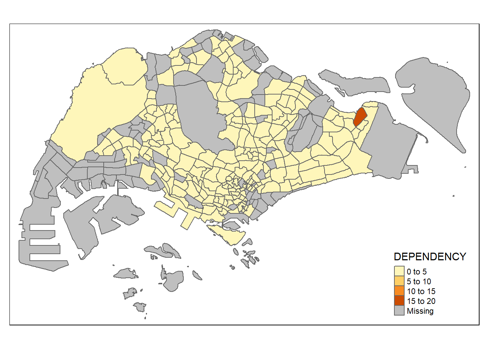

pacman::p_load(tmap, sf, tidyverse, sfdep, knitr, plotly)In-class_Ex2
Start of In-class Exercise 2
Getting Started
This load the R packages
sf is a powerful package, that allow us to process a big chunk of data with a routine. it help to handle geospatial data, in a spatial tibble format
sfdep is replacing spdef
tmap is a mapping package, very powerful to create thematic map
tidyverse is a family of R packages, it is a concept framework to help developer to design R packages that conform to the same design standard. It allow asynchronised update, we can update 1 module by 1 module. Tidyverse has
tibble - the dataframe forcats - for vector stringr - for string lubridate - for date fields dplyr - tdyr purrr - organise model
python uses panda to do data wrangle. Panda team has to upgrade everything and release it.
knitr - will generate the HTML table for us, static HTML table, not iteractable
pacman package is installed but not loaded, that’s why we use pacman::, if we don’t include pacman:: it will return a error that the function “p_load” cannot be found
this also allow us to have a more tidy way of loading in the required packages wihtout going into the need of typing libaray(tmap), library(sf), so & so forth
The Data
For the purpose of this in-class ex, the Hunan dataset will be used. There are 2 dataset in this use case
- basemap : hunan
- metadata : hunan2012
Import basemap
Hunan
hunan <- st_read(dsn = "data/geospatial",
layer = "Hunan")Reading layer `Hunan' from data source
`C:\worksheep\ISSS624\In-class_Ex\In-class_Ex2\Data\geospatial'
using driver `ESRI Shapefile'
Simple feature collection with 88 features and 7 fields
Geometry type: POLYGON
Dimension: XY
Bounding box: xmin: 108.7831 ymin: 24.6342 xmax: 114.2544 ymax: 30.12812
Geodetic CRS: WGS 84using st_read allow us to read it in simple features or layer from database this is a function under the package sf
it is in tibble format, it will not overcluster. It allow a list within the dataframe, e.g. the geometry of polygon is actually a list (also called simple feature geometry(sfg))
each row is a “observation” in R format. The feature here is referring to the geographical type (entity), point, line or polygon.
the specification are written by Open Geospatial Consortium (OGC), Europe has a “law” that software must have inter-operable. Othewise, the software cannot sell in EU
head(hunan)Simple feature collection with 6 features and 7 fields
Geometry type: POLYGON
Dimension: XY
Bounding box: xmin: 110.4922 ymin: 28.61762 xmax: 112.3013 ymax: 30.12812
Geodetic CRS: WGS 84
NAME_2 ID_3 NAME_3 ENGTYPE_3 Shape_Leng Shape_Area County
1 Changde 21098 Anxiang County 1.869074 0.10056190 Anxiang
2 Changde 21100 Hanshou County 2.360691 0.19978745 Hanshou
3 Changde 21101 Jinshi County City 1.425620 0.05302413 Jinshi
4 Changde 21102 Li County 3.474325 0.18908121 Li
5 Changde 21103 Linli County 2.289506 0.11450357 Linli
6 Changde 21104 Shimen County 4.171918 0.37194707 Shimen
geometry
1 POLYGON ((112.0625 29.75523...
2 POLYGON ((112.2288 29.11684...
3 POLYGON ((111.8927 29.6013,...
4 POLYGON ((111.3731 29.94649...
5 POLYGON ((111.6324 29.76288...
6 POLYGON ((110.8825 30.11675...Import metadata
hunan2012 <- read_csv("data/aspatial/Hunan_2012.csv")this is a typical tibble dataframe, with 88 observations (row), 29 variable (column)
Import TimeSeries GDP Per Capita
GDPPC <- read_csv("data/aspatial/Hunan_GDPPC.csv")Joining the data together
hunan_allmerged <- left_join(hunan,hunan2012)we need to know which 1 we want to retain, e.g. we want to retain the spatial property, we use left_join with the dataframe with spatial attributes infront.
left_join is dplyr function. In R, we always use packages. This is quite smart that despite they have different column name (NAME_3 in Hunan vs County in Hunan2012), they can still do a left join w/o us specifying which column to join by specifically
In addition, this left_join using dplyr function automatically kept the geometry attribute. if we use the leftjoin from basic R, it doesn’t retain it
hunan <- hunan_allmerged %>% select(1:4,7,15)this is the previous code given by prof, but i wanted to split it up to see what the dataset is
hunan <- left_join(hunan,hunan2012)%>% select(1:4, 7, 15)
Visualisation
GDP Per Capita 2012
basemap <- tm_shape(hunan) +
tm_polygons() +
tm_text("NAME_3", size=0.5)
gdppc <- qtm(hunan, "GDPPC")
tmap_arrange(basemap, gdppc, asp=1, ncol=2)
Starting the use of sfdep
wm_q <- hunan %>%
mutate(nb = st_contiguity(geometry),
wt = st_weights(nb,
style = "W"),
.before = 1
)it is a tibble dataframe, so we can use mutate, which is a dpylr function that allow us to insert back into the dataframe
st_contiguity by default use queen pattern weight style W is using row standarised weight
so we store all the neighbour and weight into the tibble dataframe directly (as compared to spdep we need to store differently into a separate list before combining together)
sfdep is technically a wrapper of spdep, but allow output back into tibble format, which make our live much easier
Computing Local Moran I
nsim is the number of simulation, to create different random observation local_moran() calculate multiple values, so we need to unnest local_moran variable into individual column
lisa <- wm_q %>%
mutate(local_moran = local_moran(
GDPPC, nb, wt, nsim = 99),
.before = 1) %>%
unnest(local_moran)this follow the tibble way, is tidier than the previous method in addition, it also help to calculate all the high-high, low-low and output it as well, we no need to separately generate. no need to join table.
sometimes when we google, the results are using older packages, yes it can solve the problem, but it may complicate your process further as it is using the older package and may not be compatible with other steps down the road.
if the result is highly skewed (e.g. GDP), we may not want to use mean, but use median. pysal is using a python package
Emerging Hot Spot
Creating a Time Series Cube
GDPPC_st <- spacetime(GDPPC, hunan,
.loc_col = "County",
.time_col = "Year")is_spacetime_cube(GDPPC_st)[1] TRUEis_spacetime_cube(GDPPC)[1] FALSEAlthough the 2 dataset look similar at initially, but actually when we look into the table information, there are space time information under the meta datain GDPPC_st
Computing GI* part 1
GDPPC_nb <- GDPPC_st %>%
activate("geometry") %>%
mutate(nb = include_self(st_contiguity(geometry)),
wt = st_inverse_distance(nb, geometry,
scale = 1,
alpha = 1),
.before = 1 )%>%
set_nbs("nb") %>%
set_wts("wt")need to have activate before we calculate all these. although this is not too efficient given that the neighbour don’t change across the year in this setting. However, if we don’t have this, they will have to give us a big table
Computing Gi* part 2
gi_stars <- GDPPC_nb %>%
group_by(Year) %>%
mutate(gi_star = local_gstar_perm(
GDPPC, nb, wt)) %>%
tidyr::unnest(gi_star)Output
cbg <- gi_stars %>%p <- ggplot(data = cbg,
aes(x = Year,
y = gi_star))
ggplotly(p)k is the time lag, 2014 compare wiht 2013, so and so forth. spatial is already taken care of by the database, space time cube GDPPC_st
ehsa <- emerging_hotspot_analysis(
x = GDPPC_st,
.var = "GDPPC",
k = 1,
nsim = 99
)there is a difference between “no pattern” (yellow) and “missing value” (grey). all those with
ehsa_sig <- hunan_ehsa %>%
filter(p_value <0.05)
tmap_mode("plot")
tm_shape(hunan_ehsa)+
tm_polygons()+
tm_borders(alpha = 0.5) +
tm_shape(ehsa_sig) +
tm_fill("classification")+
tm_borders(alpha = 0.4)Notes for class
In geospatial, it is normally about space randomness than normally distributed as per statistics
Economically Active Group - 16-64 Economically Inactive Group - 0-15 + >=65
Dependency Ratio = Economically Inactive / Economically Active
Spatial Weights - Adjacency - Distance Based
Real world phenomena might not have shared boundary. e.g. island has no immediate neighbour, but this island might be part of a certain region
In addition, we can also use inverse distance as weight
we can create modifying area to make it regular (e.g hexagon). The shape is not exactly fixed, but hexagon is one of the most compact geometrical shape
Only in more modern urban design, the layout is more grid like e.g. in punggol in Singapore, or like Seattle in US
Lag1 = immediate neighbour Lag2 = immediate + next level neighbour
when we want to check when the cluster subside, we will try to see where the influence wane, so we will go lag1, lag2, lag3 so and so forth
On row standardisation. it is more like an average, instead of sum, if we use Binary W, those with more neighbours has more 1, leading to a higher number. Whereas if we use Row Standardised, it will be 1/x each for x neighbour. Sum = 1
1 example given by Prof is his analysis with Pizza Hut, on time distance away from franchise store. We don’t want to be overcrowded, but also not too far. Identify each of the neighbour, and see which give them the highest market share reach.
County is the smallest administrative distict, although there will still be villages within the county
There are 2 portion to look at - Spatial dependency (2 variable) - we use it for oil reservoir discovery, borehole sampling, interpolate to create a modelling of where is likely the oil reservoir, and avoiding bedrock. if the borehole drill hit the bedrock, it will crack and be lost underground and cannot be retrived.
- Spatial Autocorrelation (1 variable) : we observe the value with its neighbour. It is very similar to correlation (xi - xbar) x (yi - ybar). but it is (xi - xbar) x (xj -xbar)
positive spatial autocorrelation : you see lumps, clustering negative spatial autocorrelation : you see checkedbox
LISA high high cluster - high value surrounded by high value low low cluster - low value surrounded by low value outlier
it might not be statistically significant because of 2 reason 1) not enough neighbour (we will want to increase the number of neighbour, to make sure we are not bias) 2) the neighbour properties (cannot solve furhter)
Getis method
- weight matrix must be distance based, unliked Morant & Geary which can use adjacency. We want to be more precise, this is using more precise and refined data in the 1990s where there are GPS data, instead of Morant & Geary in the 1960s where it is more coarse. Getis is also looking at healthcare, which is more distance based
G vs G(star) wii(d) = 0 vs wii(d) =/= 0 don’t include itself vs include itself
Time Series
Mann-Kendall, student asked if this mean it cannot have gap. Prof replied yes, cannot have gap. need to fill in with value.
Use G(star)i for
Separate notes
quarto documents are authored using markdown, an easy to write plain tet format quarto documents are generated using pandoc, a universal document converter
when we run R, it is in memory and it may not need to run in sequence, so it could be possible that the output works, because we were doing trial and error and skip different steps.
Whereas when we render, it must go in sequence, so it may not work as per the skip step